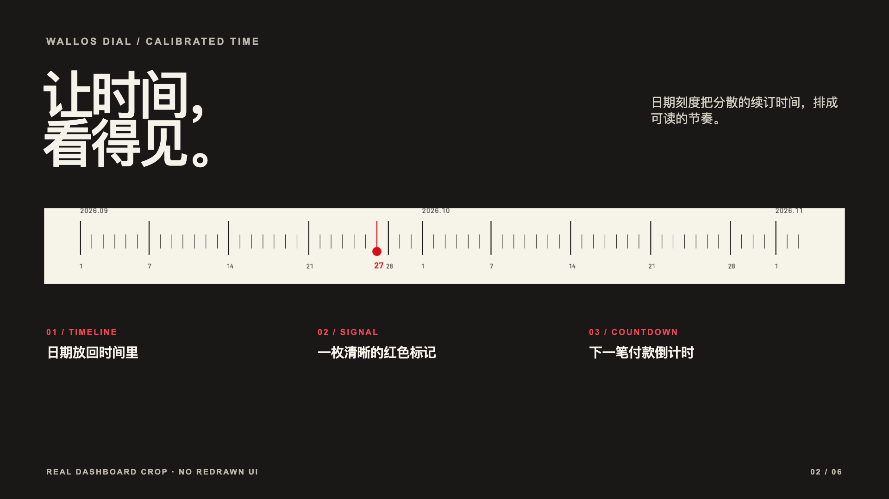
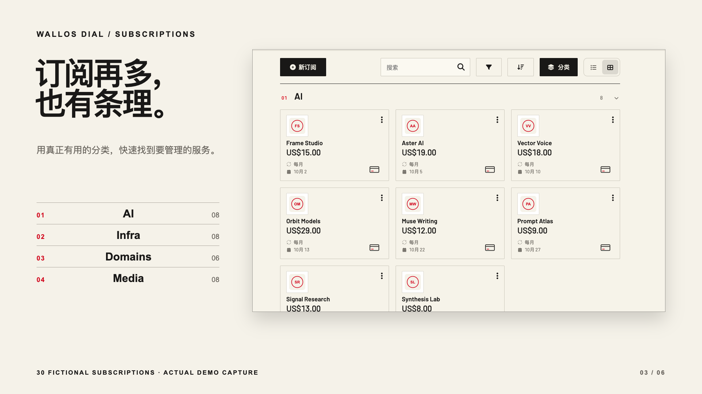
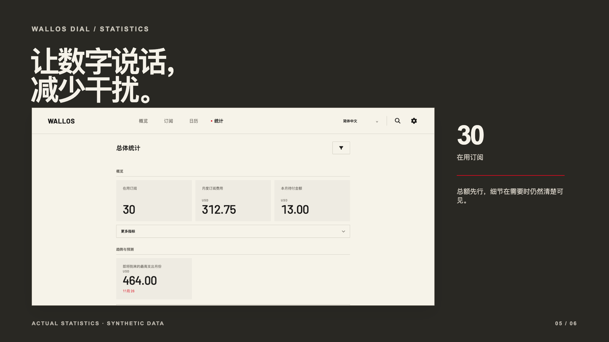

开源 · 桌面优先 · Wallos 5.8.1
看清每一次续订。
Wallos Dial 是为 Wallos 独立开发的桌面主题。它把持续支出、下次付款日期和订阅服务整理进一套克制、精确的界面，同时保留熟悉的 Wallos 操作流程。

0.1.0Wallos Dial 版本
5.8.1已验证的 Wallos 版本
GPLv3独立开源叠加层
设计思路
持续支出，有了清晰的节奏。
暖白底、黑色数字、精确日期刻度和少量红色，贯穿整个桌面界面。


真实应用 · 虚构记录
安装之前，先自己体验。
在线 Demo 运行真正的 Wallos Dial PHP 应用，包含 30 条虚构订阅。公开环境只读；你可以浏览总览、分类订阅、日历、统计和语言切换。新增、编辑与账户管理需要自行安装。
保留原有能力
熟悉的 Wallos，新的阅读体验。
订阅管理
新增、编辑与管理订阅继续由自行安装的 Wallos 应用处理。
语言切换
顶栏可选择简体中文、英文、繁体中文及 Wallos 的其他语言。用户填写的订阅名称不会自动翻译。
版本兼容
Dial 0.1.0 固定在 Wallos 5.8.1。上游更新后，需要经过检查的新版主题镜像。
git clone https://github.com/LukeVoidX/wallos-dial-theme.git
cd wallos-dial-theme
docker compose up -d- 在 Docker 主机打开
http://127.0.0.1:8282，或通过 SSH 转发端口。 - 按 Wallos 原有流程完成首次注册。
- 核对总览、订阅、日历和统计页面。
常见问题
切换前需要知道的事。
这是 Wallos 官方主题吗？
不是。Wallos Dial 是独立开发的 GPLv3 源码叠加层，构建为 Docker 镜像；它不隶属于 Wallos 项目，也不是应用内置的主题选项。
Wallos 更新后会自动兼容吗？
不会。当前版本只验证 Wallos 5.8.1。新的上游版本需要检查兼容性、重新构建并发布经过测试的 Dial 镜像。
在线 Demo 可以修改数据吗？
不能。公开 Demo 只读，使用 30 条虚构订阅。账户与编辑功能需要自行安装镜像。
切换语言会翻译订阅名称吗？
界面标签会切换语言；用户填写的名称和备注会保留原文。